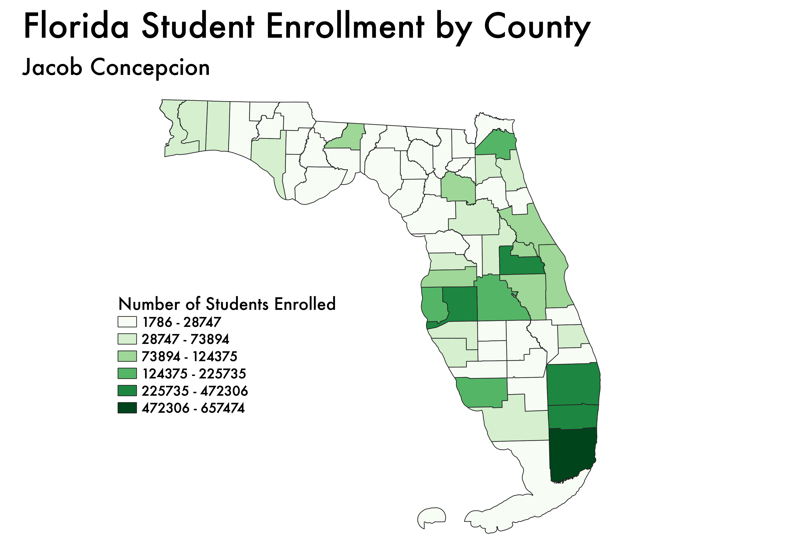

Homework 6: Census data choropleth
Jacob Concepcion
This choropleth map depicts the number of students that are enrolled within the counties of Florida.
The more students within a county, the darker the shade of green.

Data used for this project
CSV dataset
Link to shapefile